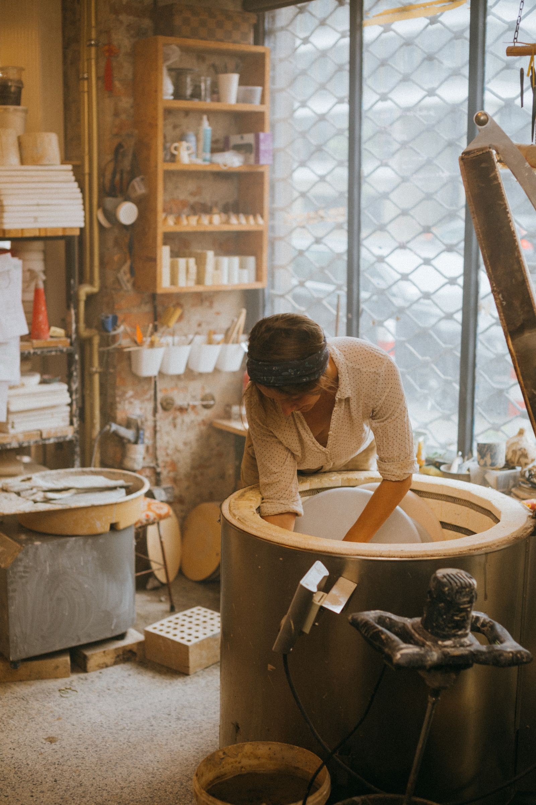

The MakerOne bench, one kiln, two hands — plus help at firing time
Ruth Calloway learned clay at a brickworks that no longer exists
Ruth Calloway started work at sixteen in the clay preparation shed of a Lincolnshire brickworks, feeding the pugmill and learning — the way you learn anything at sixteen, by being corrected — what a clay body should feel like before it is formed. She stayed nine years, through the works' last good decade, and left in 2009 when it closed, two weeks before the kilns were demolished.
What followed was four years with a heritage roofing contractor, up on the roofs her first trade had covered from below. That is where the pantiles were: nineteenth-century roofs all over the Wolds and the Marsh, sound in the main, failing a tile at a time — and no one within a hundred miles still making a tile that matched them. Roofers were patching with machine-made tiles that sat proud, leaked at the laps, and read as grey-orange patches from the road.
Calloway Clay was set up in 2016 in a former farmyard outside Horncastle: one forming bench, a drying shed, and a second-hand gas kiln. The yard has grown by exactly one kiln since. It still makes one product — a handmade terracotta pantile, 342 × 241 mm — in batches of 3,000, alongside the salvage and grading work that keeps old tiles in circulation and supplies the grog every new batch is tempered with.
The rule of the yard, set in the first year and not revised since: if we would not put it on a Grade I roof, it does not leave. Tiles that fail grading are not seconds. They are grog.
Yard NotesWritten for owners, not for ceramists
Clay and firing, stated plainly

Why one seam of clay. A roof tile's colour and frost resistance are set mostly by its clay, not by anything done to it afterwards. Oxford clay — the grey-blue Jurassic band that runs under this part of Lincolnshire — fires to the red-orange range the county's old roofs are built from, and vitrifies hard enough at 1,020 °C to keep water absorption low. Working a single seam means batch 214 behaves like batch 156 did; the register can promise a match because the material has not changed underneath the promise.
What the firing does. Below about 900 °C a clay tile is baked earth: it will soak up water like a flowerpot, and the first hard frost will take its face off. At 1,020 °C, held for two hours, the body begins to vitrify — the particles fuse at their edges — and absorption drops to the level a roof tile needs. That is the whole difference between a tile that lasts a century and one that lasts a decade, and it is why the kiln is gas-fired and logged: the temperature is not a detail.
Colour, honestly. The red comes from iron in the clay; nothing is added and nothing is painted on. Tiles close to the burners flash darker, and a batch leaves the kiln in three tones. On a roof that spread is not a defect — it is what every old pantile roof in the county looks like, and a single flat colour is the surest sign of a machine tile. We grade the three tones and mix them on the pallet. If you want one flat colour, we are not your yard, and we will say so before taking a deposit.
For Roof OwnersAssessment before repair, always
Looking after a pantile roof
A sound pantile roof asks for very little: an informed look once a year, and the right repair at the right time. Most of the damage we are called out to was done by good intentions — or by a pressure washer.
-
What frost damage looks like
The face of the tile shells off in thin flakes or shallow saucers, exposing a paler, softer body underneath — usually worst on the slope that stays damp longest. A tile or two is a repair; whole courses shelling together means the batch has reached its limit and patching will chase the problem uphill. Photograph it from the ground and send it to us before anyone quotes you for a new roof.
-
When ridges need re-bedding
Ridge tiles are bedded in lime mortar, and the mortar — not the tile — is the wearing part. Expect to re-bed every 25 to 40 years. The signs: mortar cracked away from the tile edges, pieces in the gutter, a ridge you can rock by hand. Re-bed in lime, never hard cement: cement traps water against the tile and cracks the tile instead of itself.
-
Inspecting without climbing
Walk the ground with binoculars once a year and after any storm that moved bins. Look for slipped tiles (a dark gap or a tile sitting at an angle), broken corners at the eaves, and debris dams in the valleys. Never walk on a pantile roof yourself: a pantile carries weather, not weight, and a boot through a tile turns an inspection into a repair.
-
What not to do
Do not pressure-wash: it strips the fired skin that keeps water out and can halve a tile's remaining life in one afternoon. Do not let anyone smear cement over cracks as a "repair". And do not replace single broken tiles with the nearest machine-made equivalent — a mismatched profile lifts its neighbours and starts the leak it was meant to stop. A handful of graded reclaimed tiles, or a small matched firing, costs less than the damage.
Not sure what your roof is telling you?
Send photographs — the whole slope, then close-ups of anything that worries you — with the enquiry form. The yard answers assessments honestly, including when the answer is "leave it alone".
Ask for an assessment